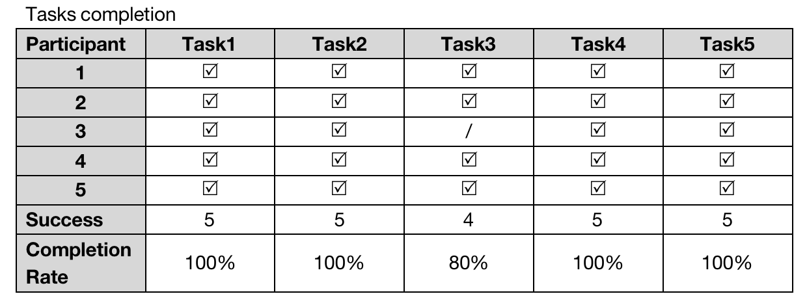
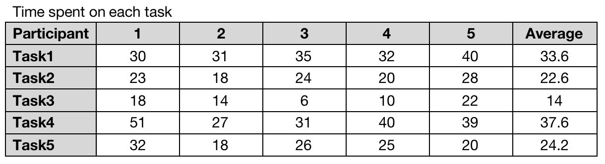

Assignment 5
This is my Fifth assignment about another Usability Test and the AB Test.
The proposed solutions hopes to realize monetization by building a business model of a community platform that will connect basketball fans closely and give them venue information to reduce the time they previously spent looking for balls, finding ballmates and booking venues. The scope was further narrowed to Hong Kong in order to better serve the 'cold start' period users for better awareness. However, how to attract more people to the platform and make them want to join the paid subscription plan to get a better "约球" experience is something that needs further validation.
Booking basketball activities with other basketball fans is the first functional requirement to be validated. Therefore the relative usability tests and AB tests are conducted to obtain feedback for validation. Usability test provides a qualitative response from the target audience about the 'why'; AB test results, meanwhile, are available to provide quantitative responses from a wider persona group about the 'what' - whether people will actually click the button in a given situation.
As for usability test, I designed five usability tasks to test the ease of use of the booking-basketball-events feature:
1. Where would you click to get the information you want?
2. How would you get more details and what details would you get?
3. Find someone who can play with you and decide whether or not to realize a activity
4. Register and log in
5. Click in the post you like in the community and find the contact number.
In addition, the test subjects were asked three questions about suggestions for improvement:
1. Please rate the website based on the user experience (10 means very satisfied, 1 means very dissatisfied)
2. What problems did you encounter during the process?
3. How do you think the page/feature could be improved?
Regarding the A/B test, as the appointment function and the community it resides in is the most important part of the platform and is also what users will only see after they have registered and logged in, the A/B test was designed to be on the registration page. The purpose of this A/B test was to see if the information about the benefits of becoming a member would increase the willingness of visitors to sign up and, to a certain extent, whether the booking function would attract users to use or even pay for it.
In the original register page, there was only the form where the registration function was located, but for variant 1, a card was added to the page that provided information about the benefits of becoming a member. This card is parallel to the registration form, so that the user can clearly see the benefits they will receive when considering whether to register or not.
 As far as time to complete the task, task 4 required the user to register with details and log in, a process that required the user to type and wait for the page to jump, so it took the longest to complete (average = 37.6 seconds). Task 1 took the second longest time to complete (average = 33.6 seconds) as it took time to understand the structure and functionality of the site, and also, it took time to load the site and stop at the video at the top of the homepage. After completing task 1, the testees saved a lot of unnecessary time when completing task 2, such as the time spent on finding the paths, so users only need to spend the time reading and learning more about it. Based on the previous steps, task 3 became more straightforward and easier for users to complete, so it cost very little time (14 seconds on average).
The average score for this process was 4.1, with the lowest being 3.5, as several users indicated that they all wanted to see more information on the site. If this need was met on the website, they would have a stronger desire to become members.
Respondents' recommendations:
For the design section,
1. the page loading speed is slow, although the video at the top of the home page increases the length of time users stay, it affects the user experience to some extent;
2. the footer looks too big and incompatible with the screen, perhaps it could be reduced in size to make it simpler;
3. the borders of the venues displayed on the venue page could be presented more softly.
For the features section,
4.the landing page jumps to the about page. Though it can present the benefits of the premium directly to the users, it does not present the benefits for the common users, i.e. they can browse the content of the community;
5.if possible, it would be better if users could go to other players' profiles and see detailed information.
For content section,
6.more details, more pictures and information about the venue/event should be provided on the detail pages;
7.if possible, develop a page for the venue to update the time validity of the event, which users can easily select and book.
The two images above show the two versions of AB Test, but the tests' result is not yet available in a more visual report now.
For brief descriptions, you can found it in my journal.